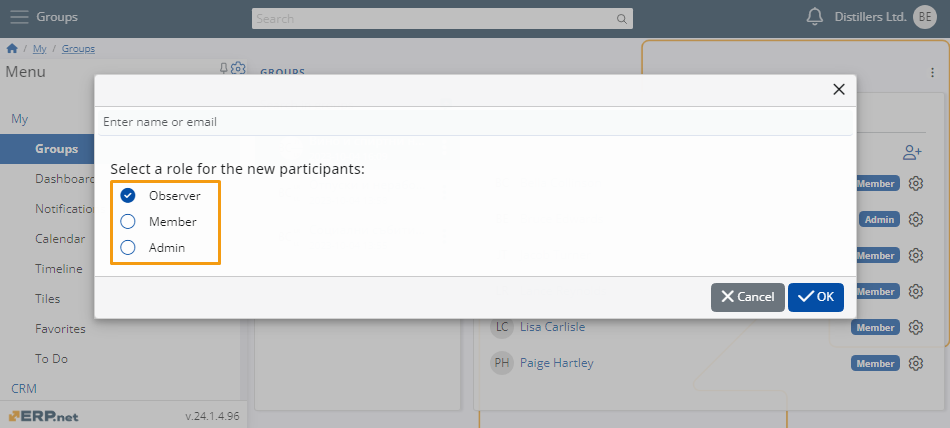
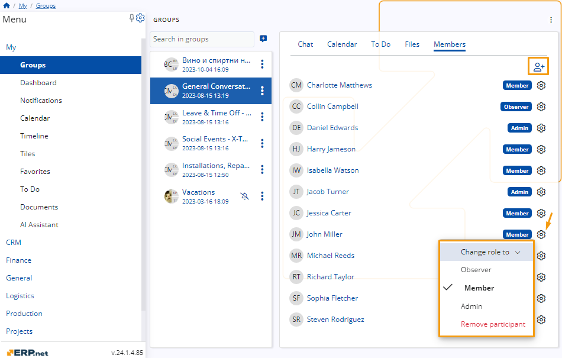
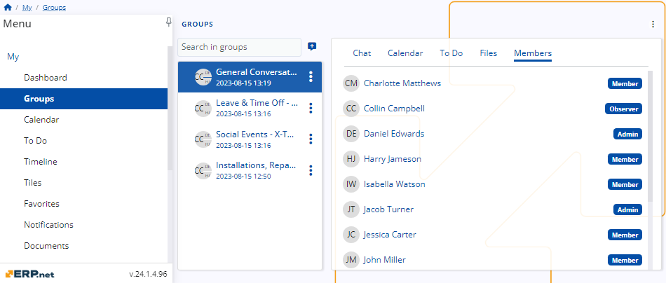
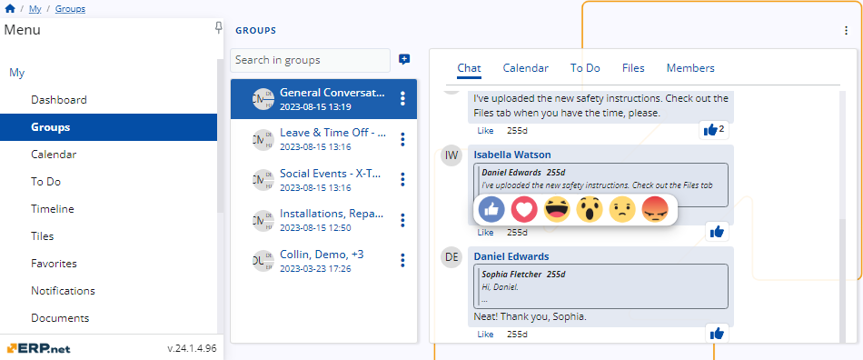

Roles
To streamline user access and ensure efficiency, roles are assigned to all members within a group as soon as they are added to it.
This allows them to access only the functionalities relevant to them at the moment, preventing potential mishaps and unwanted actions.
General responsibilities
Every social group in ERP.net comes with three predefined roles for user assignment, each having fixed permission levels that cannot be customized.

If users with limited access need to get a broader range of capabilities, they must be promoted to a role offering extra features.
Similarly, in case a member needs to get demoted, they can be assigned a role that prevents them from performing a certain set of actions.
Note
Roles can be delegated and subsequently changed only by the group's Admin(s).
Admin
The Admin role grants users every capability available in the five My Group tabs.
This role is also the only one with the authority to add new members to the group, remove existing ones, and change member roles, including that of yourself or another admin.
Warning
Each group must have at least one admin.
Chat
Admins can preview existing chat messages, write new ones, react and reply to other members' messages, as well as edit their own.
Calendar
Admins can view activities in the group Calendar, as well as create and schedule activities of any kind.
To Do
Admins can see and complete to-do tasks, as well as create new ones and assign them to others.
Files
Admins can view and download file attachments, and also upload new ones.
Members
Admins can preview all group members and their roles.
They reserve the exclusive ability to add and remove members, as well as delegate and change their roles.

Member
The Member role features all the capabilities of the Admin role.
However, members cannot add and remove other members, as well as delegate and change their roles.
Therefore, the only noticeable difference for them is the absence of certain buttons and features in the Members tab of the group.

Observer
The Observer role offers limited capabilities within a social group, featuring primarily read-only actions.
It is ideal for members who do not need to actively interact with the group but still get to be part of it.
Chat
Observers can preview and react to existing chat messages but are unable to write new ones or reply to others.
Calendar
Observers can view activities within the group Calendar but cannot create activities of any kind.
To Do
Observers can see and complete to-do tasks but cannot create new ones and assign them to others.
Files
Observers can only view and download file attachments.
Members
Observers can only preview group members and their roles.
